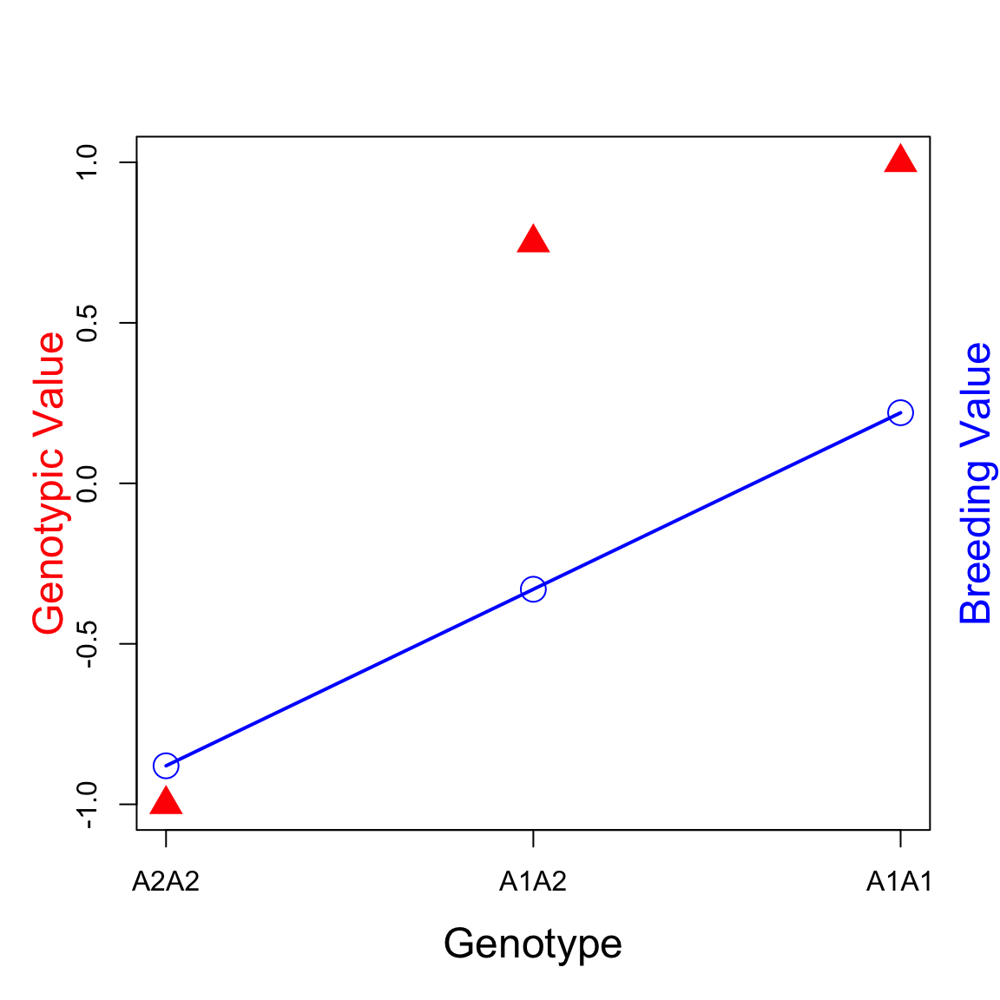
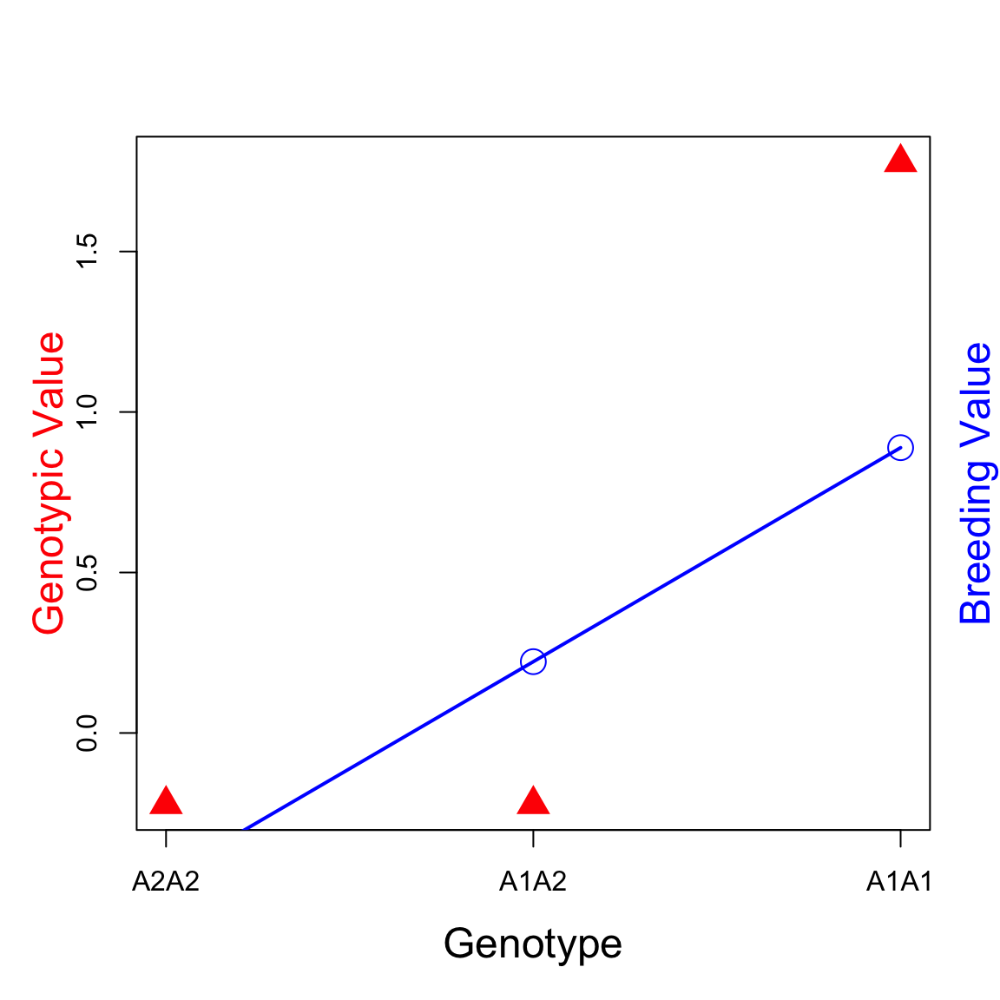

Further breakdown \(A\):
\[\begin{align*} G = & \alpha_1N_1 + \alpha_2N_2 + \delta \end{align*}\]
where,
- \(\alpha_i\) is the average effect of allele \(i\) and \(\alpha = \alpha_1 - \alpha_2\)
- \(N_i\) is the number of allele \(i\) carried by the genotype
- \(N \in \{0, 1, 2\}\) for a bi-allelic locus and \(N_1 + N_2 = 2\)
Therefore,
\[\begin{align*} G = & \alpha_1N_1 + \alpha_2N_2 + \delta \\ = & \alpha_1N_1 + \alpha_2(2 - N_1) + \delta \\ = & 2\alpha_2 + (\alpha_1 - \alpha_2)N_1 + \delta \\ = & (2\alpha_2 + \delta) + \alpha N_1 \end{align*}\]
Note that,
\[\begin{align*} A = & 2\alpha_2 + \alpha N_1 \\ D = & G - A \end{align*}\]
The relationship between genotypic values, breeding values and dominance deviations.
a = 1; d = 3/4*a
p = 4/5; q = 1 - p
alpha <- a + d*(q - p)
a1a1 <- 2*alpha*q
a1a2 <- (q-p)*alpha
a2a2 <- -2*p*alpha
plot(c(0, 1, 2), c(-a, d, a), xlab="Genotype",ylab="", cex.lab=1.5, xaxt="n", pch=17, cex=2, col="red");
axis(1, at=c(0, 1, 2), labels=c("A2A2", "A1A2", "A1A1"));
mtext("Breeding Value", side = 4, line = 1, cex=1.5, col="blue");
mtext("Genotypic Value", side = 2, line = 2, cex=1.5, col="red")
points(c(0, 1, 2), c(a2a2, a1a2, a1a1), cex=2, col="blue")
lines(c(0, 1, 2), c(a2a2, a1a2, a1a1), lwd=2, col="blue")
gfunction <- function(a=1, d=0, p=1/2){
# a: additive effect
# d: dominance effect
# p: allele frequency for the A1 allele
q = 1-p
# allele sub effect
alpha <- a + d*(q-p)
a1a1 <- 2*alpha*q
a1a2 <- (q-p)*alpha
a2a2 <- -2*p*alpha
# population mean
M <- a*(p-q) + 2*d*p*q
# return a data.frame with genotype values and breeding values
return(data.frame(N1=c(0,1,2), gv=c(-a-M,d-M,a-M), bv=c(a2a2, a1a2, a1a1)))
}## N1 gv bv dd
## 1 0 -0.2222222 -0.4444444 0.2222222
## 2 1 -0.2222222 0.2222222 -0.4444444
## 3 2 1.7777778 0.8888889 0.8888889plot(out$N1, out$gv, xlab="Genotype",ylab="", cex.lab=1.5, xaxt="n", pch=17, cex=2, col="red");
# add the axis and labels
axis(1, at=c(0, 1, 2), labels=c("A2A2", "A1A2", "A1A1"));
# add y-axis title on the right side
mtext("Breeding Value", side = 4, line = 1, cex=1.5, col="blue");
# add y-axis title on the left side
mtext("Genotypic Value", side = 2, line = 2, cex=1.5, col="red")
# add breeding values
points(out$N1, out$bv, cex=2, col="blue")
# join the points by a line
lines(out$N1, out$bv, lwd=2, col="blue")
Download the Rice Diversity Panel data RiceDiversity.44K.MSU6.Genotypes_PLINK.zip from http://ricediversity.org/data/sets/44kgwas/.
We will use the read.table function to read the phenotype file RiceDiversity_44K_Phenotypes_34traits_PLINK.txt from here.
# phenotypes
rice <- read.table("http://www.ricediversity.org/data/sets/44kgwas/RiceDiversity_44K_Phenotypes_34traits_PLINK.txt", header=TRUE, stringsAsFactors = FALSE, sep = "\t")
rice <- rice[, 1:3]
## add a fake genotype assuming the pop in HWE
p = 0.2
q = 1-p
rice$geno <- sample(c(0,1,2), size=nrow(rice), prob=c(p^2, 2*p*q, q^2), replace=TRUE)Let’s find out the genotypic value and breeding value for each individual.
The number of copies of the A1 allele: - A1A1 -> 2 - A1A2 -> 1 - A2A2 -> 0
A1A1 <- mean(subset(rice, geno == 2)$Flowering.time.at.Arkansas, na.rm=TRUE)
A1A2 <- mean(subset(rice, geno == 1)$Flowering.time.at.Arkansas, na.rm=TRUE)
A2A2 <- mean(subset(rice, geno == 0)$Flowering.time.at.Arkansas, na.rm=TRUE)
### mid point
m <- (A1A1 + A2A2)/2
a <- A1A1 - m
d <- A1A2 - m
### Population mean
M1 <- mean(rice$Flowering.time.at.Arkansas, na.rm=T)
### M = a*(p-q) + 2*d*p*q
df <- as.data.frame(table(rice$geno))
# allele freq for A1 (2 coding)
p <- (2*df[df$Var1==2,]$Freq + df[df$Var1==1,]$Freq)/(2*sum(df$Freq))
q <- 1-p
M2 <- a*(p-q) + 2*d*p*q
M2 <- M2 +m